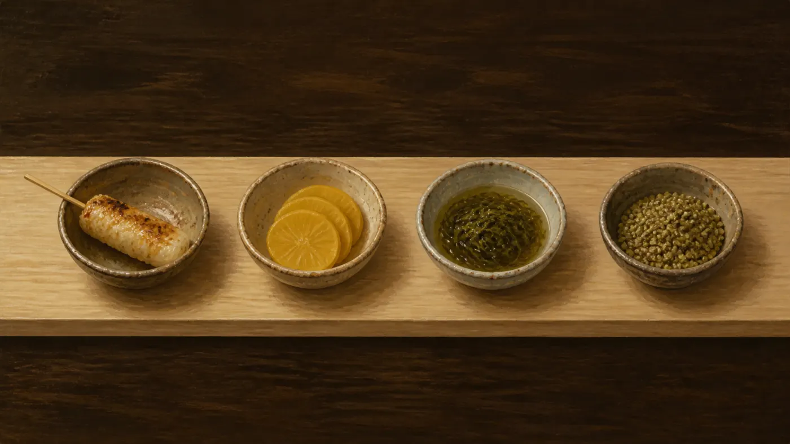

ためし打ち（任意）— 1品だけ打つと、その速さに合うコースを選んでおきます
音
- 打ち方はローマ字入力。
しはshiでもsiでも、んはnでもnnでも通ります - 間違えても打ち直しは要りません。そのまま次のキーを押せば進みます
そのほかの決まり
- 打ち始めた料理は取り上げません。左端まで流れても、打ち終わるまで待ちます
- 皿に出ている1文字を押すと、その皿から打ち始められます。選べるのは語の1打目だけで、途中では移りません（指がずれただけで打ちかけの語が消えないように）
- まだ1文字も打っていない料理は、左端まで流れると逃したことになります（減点はありません）
- 対戦中は Esc でやめられます。音は Ctrl+M で切り替わります
日本語入力はOFF（半角英数）にしてください。値段はこのゲーム内の目安で、実際の価格ではありません。
スマホでも遊べます（レーンをタップするとキーボードが出ます）。物理キーボードのほうが快適です。
通信はしません。記録も保存しません。すべてブラウザの中だけで動いています。
はじまります
3
料理のデータを読み込めませんでした
食べた ¥0 / ¥3,000 のおすすめ のこり 60秒
逃した 0皿
ここをタップしてキーボードを出す
日本語入力がONになっています。半角英数に切り替えてください。 Mac は 英数キー、Windows は 半角/全角（または Ctrl+Space）
つぎの皿を待っています
つかみ中 — 打ち終わるまで待ってくれます
Enter でも同じコースをすぐ始められます。
- 打鍵速度
- —
- 正確率
- —
食べた — ／ 逃した皿 —（逃しても減点はありません）
打ち損ねたキー
押すはずだったキーと、その直前に打ったキーの並びです。
1度もミスしませんでした。
食べた料理
1皿も食べられませんでした。
記録は保存しません。前回との比べ合いも、ページを閉じたら消えます。